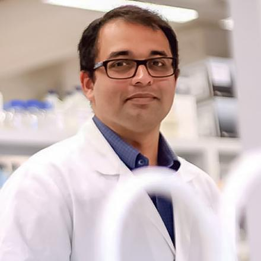

Medical Science Liaison · AstraZeneca ANZ
MBBS · PhD · M.Biotech.
Senior Medical Science Liaison in the Vaccines and Immune Therapies unit at AstraZeneca ANZ. I bridge the gap between the bench and the bedside by building relationships with healthcare providers, research scientists, and government agencies to support the appropriate use of pharmaceuticals and inform new product strategy. A physician with deep research experience in Immunology and Infectious Diseases.

Translating complex scientific data into actionable insights for healthcare providers and internal stakeholders, supporting evidence-based use of vaccines and immune therapies.
PhD-level research expertise in immunological mechanisms and infectious disease pathophysiology, applied to the development and commercialisation of novel therapies.
Physician with extensive patient care experience, offering a unique clinical lens to pharmaceutical strategy and healthcare stakeholder engagement.